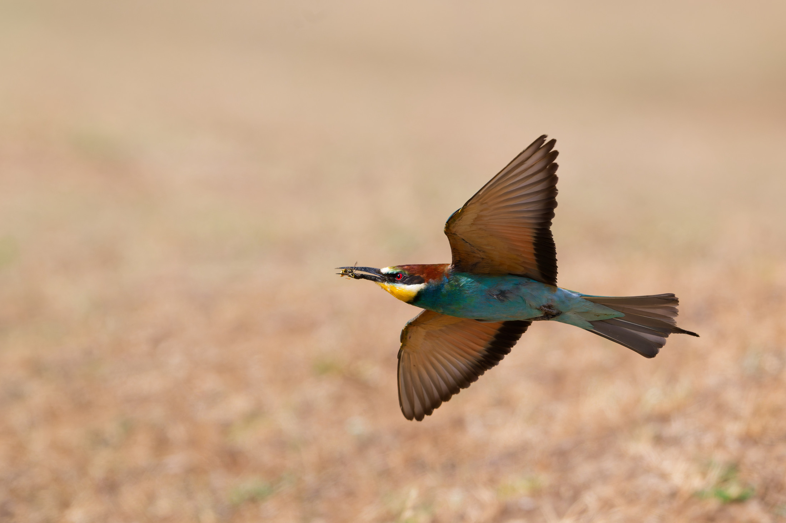
2026-07-23/ Nikon Z 8 · 600 mm · f/7,1 · 1/6400 s · ISO 1600
Gyurgyalag
Merops apiaster
-
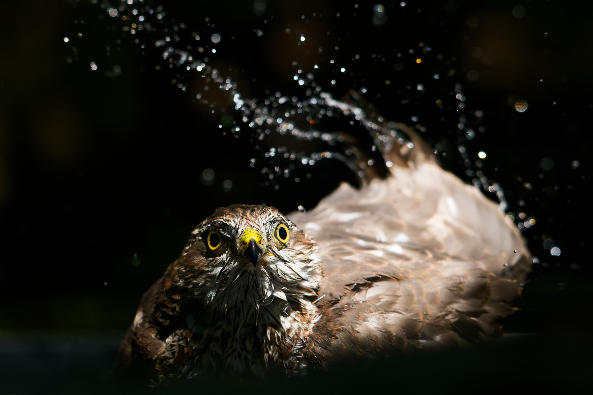
2026-07-17/ Nikon Z 8 · 230 mm · f/5,6 · 1/4000 s · ISO 4000
Karvaly
Accipiter nisus
-
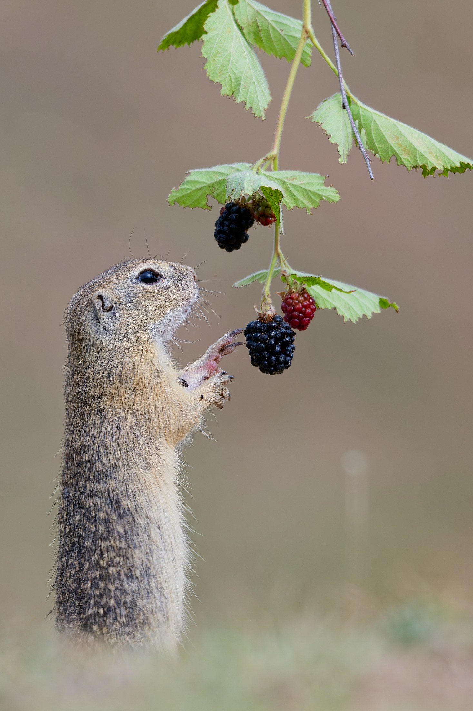
2026-07-24/ Nikon Z 8 · 490 mm · f/7,1 · 1/5000 s · ISO 1250
Ürge
Spermophilus citellus
-
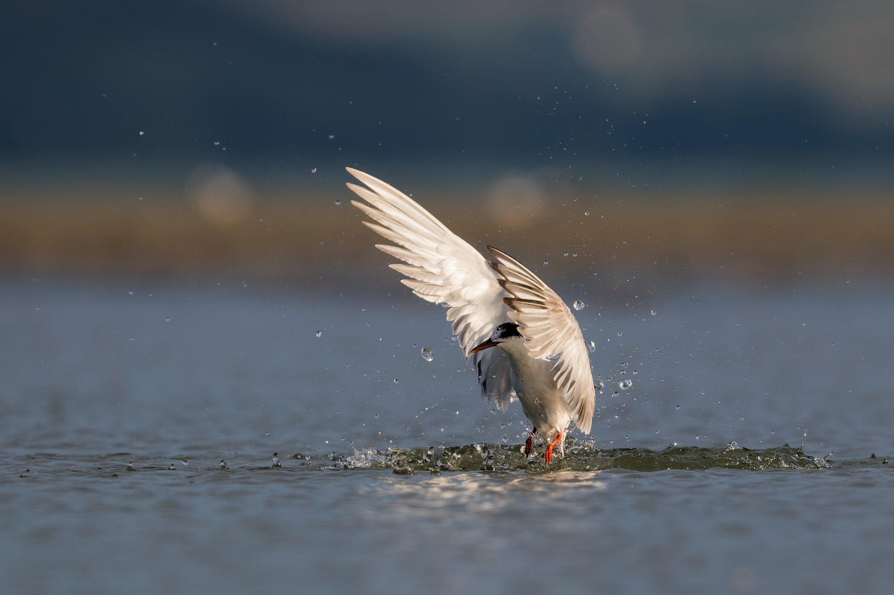
2026-09-03/ Nikon Z 8 · 600 mm · f/7,1 · 1/3200 s · ISO 720
Küszvágó csér
Sterna hirundo
-
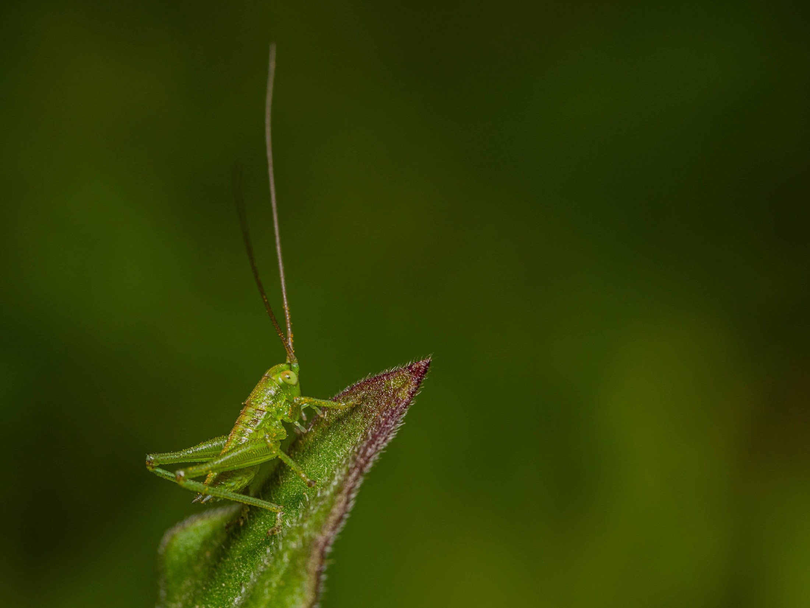
2023-04-13/ Nikon Z 5 · 90 mm makró · 1/100 s · ISO 100
Szöcske (lárva)
Tettigoniidae
-
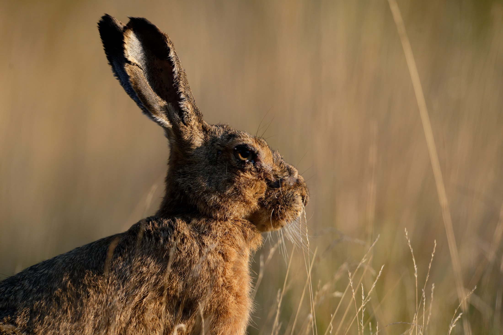
2026-08-02/ Nikon Z 8 · 440 mm · f/6,3 · 1/3200 s · ISO 1250
Mezei nyúl
Lepus europaeus
-
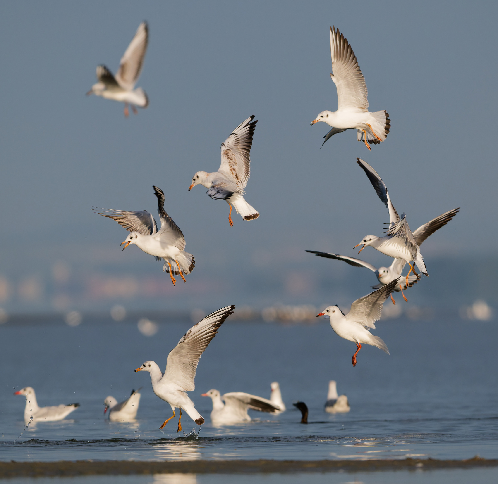
2026-09-05/ Nikon Z 8 · 600 mm · f/7,1 · 1/3200 s · ISO 400
Dankasirály
Chroicocephalus ridibundus
-
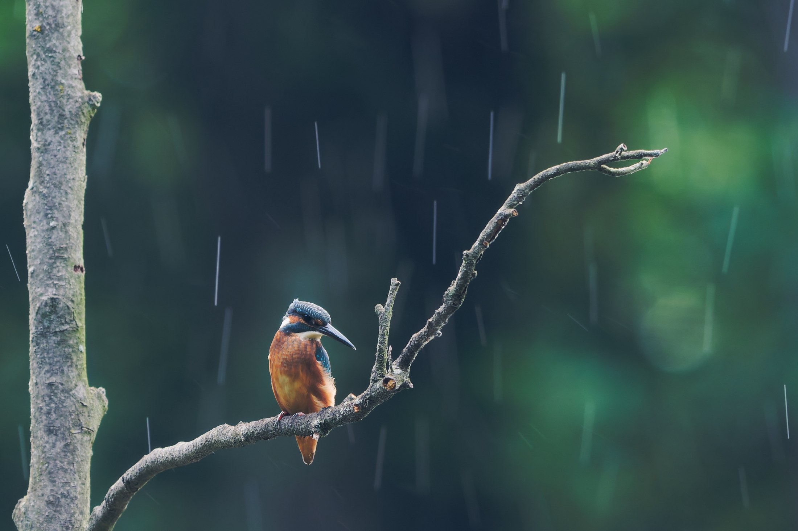
2026-07-19/ Nikon Z 8 · 600 mm · f/7,1 · 1/125 s · ISO 360
Jégmadár
Alcedo atthis
-
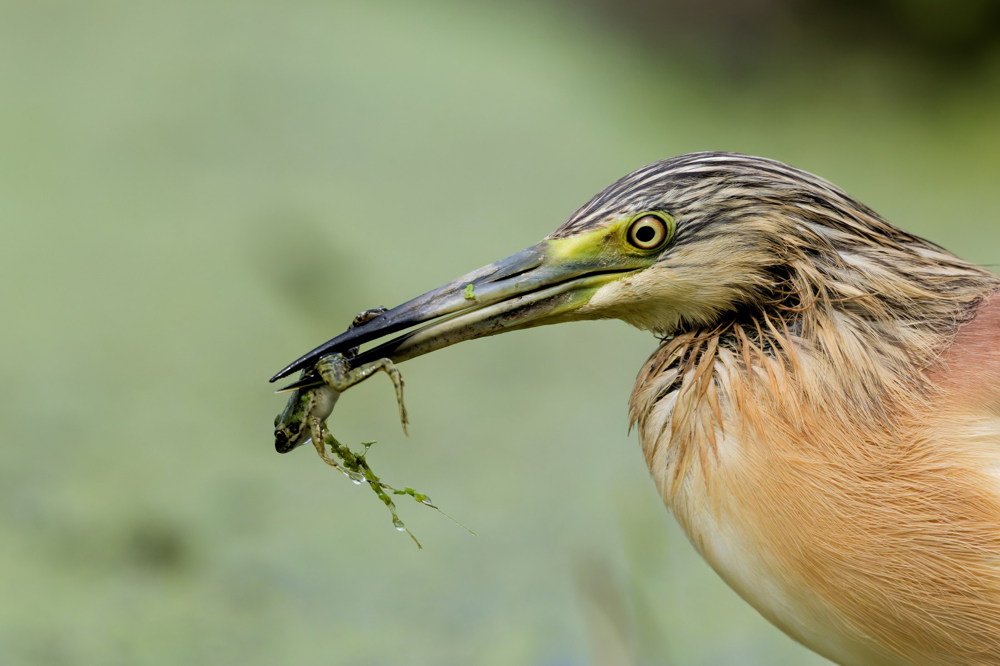
2026-07-02/ Nikon Z 8 · 430 mm · f/6 · 1/16000 s · ISO 5000
Üstökösgém
Ardeola ralloides
-
2026-09-03/ Nikon Z 8 · 600 mm · f/7,1 · 1/3200 s · ISO 720
Küszvágó csér
Sterna hirundo
-

2026-08-16/ Nikon Z 8 · 600 mm · f/6,3 · 1/3200 s · ISO 900
Búbos vöcsök
Podiceps cristatus
-

2023-07-24/ Nikon Z 5 · 90 mm makró · 1/100 s · ISO 100
Pók
Araneae
-
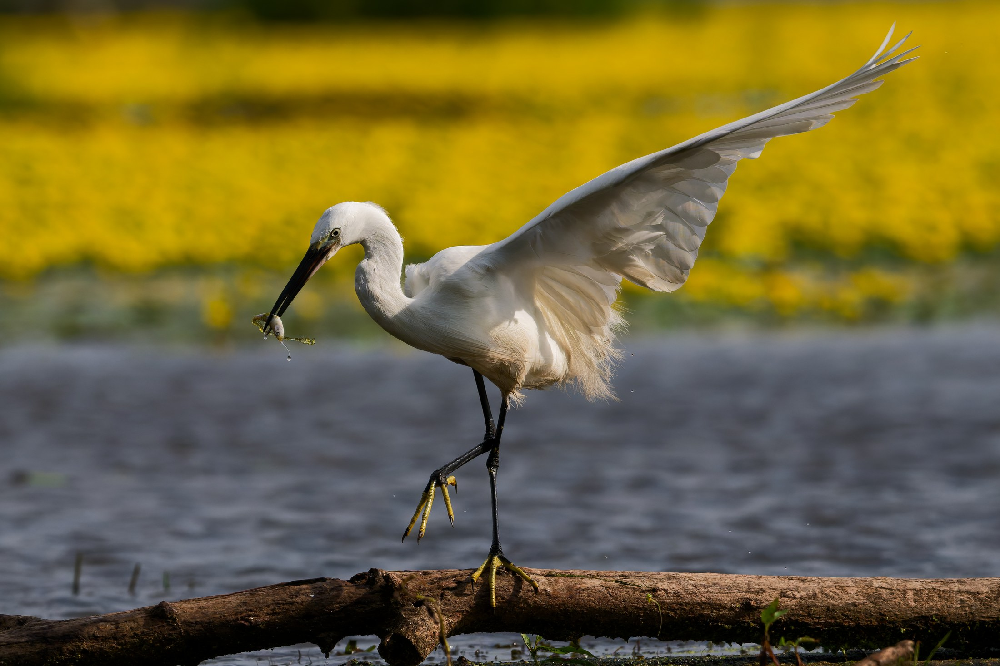
2026-07-02/ Nikon Z 8 · 320 mm · f/6,3 · 1/13000 s · ISO 900
Kis kócsag
Egretta garzetta
-
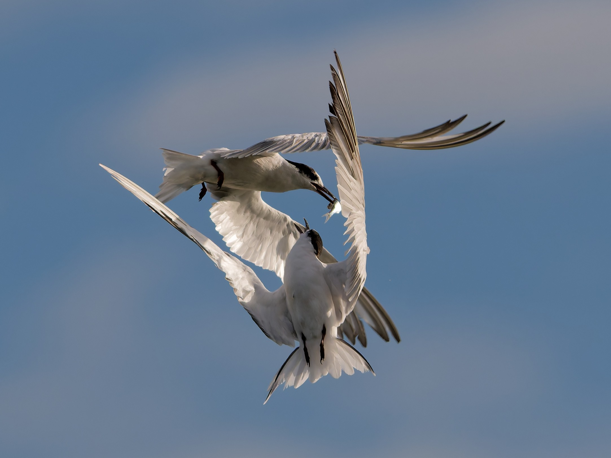
2026-09-03/ Nikon Z 8 · 600 mm · f/7,1 · 1/3200 s · ISO 400
Küszvágó csér
Sterna hirundo